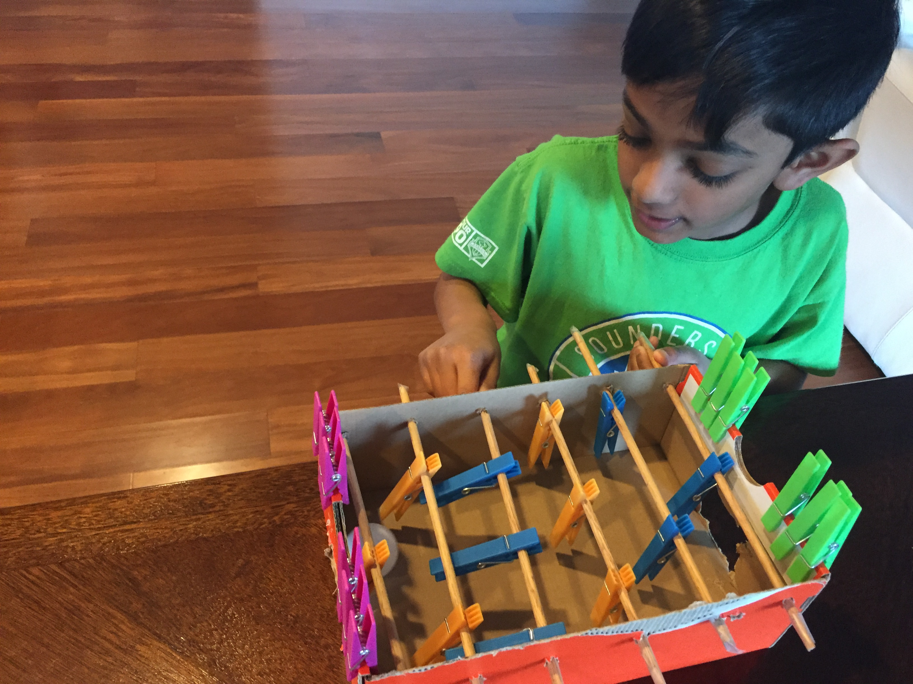

The problem/motivation
I wanted a foosball table but didn't have one lying around — so instead of asking for one, I decided to see if I could build a working version myself out of whatever was around the house: a spare cardboard box, some wooden dowels, and a pack of clothespins.
How it works
The cardboard box became the table itself. Wooden dowel rods run all the way through holes poked in both sides of the box, so each rod can still spin and slide side to side just like a real foosball rod. Clothespins clipped onto each dowel act as the players, color-coded by row and team — pink, orange, blue, and green — so it's easy to tell which row belongs to which side just by looking at it.
Process
- Found a sturdy cardboard box to use as the table body.
- Poked holes through both side walls to hold the dowel rods in place while letting them spin.
- Cut and fit wooden dowels to span the width of the box for each row of players.
- Clipped clothespins onto each dowel as the players, color-coding them by row/team.
- Tested the rods to make sure they could spin and slide freely before playing.
Results
The result was a fully playable, homemade foosball table built entirely from cardboard, dowels, and clothespins — proof that a real game could be built out of things that were just sitting around the house.
What I'd do differently
Cardboard held up for a while but wasn't the most durable material for something that gets knocked around during play. If I built this again, I'd use a sturdier frame — plywood or a similar solid material — and find a cleaner way to mount the rods so they'd spin and slide more smoothly over time.